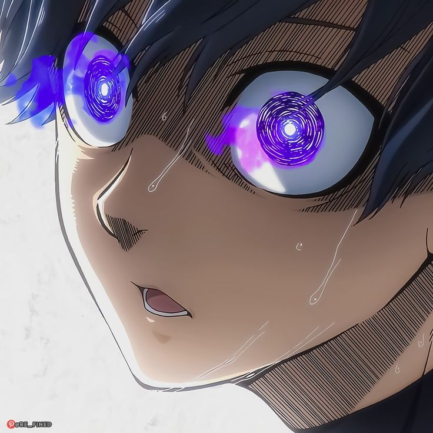

Greetings!!
citizens of the world.
I'm Iconic Whisper
CTF Player
I'm a cybersecurity enthusiast on the path to offensive security. From CTFs to hands‑on labs, I learn by building, breaking, and documenting. Let's connect and collaborate.
See my creations Look at my solves
About
I am a CTF player competing with Blue Lock Eleven, focusing on binary exploitation, reverse engineering, and systems security. Outside of CTFs, I work as a part-time bug hunter and security researcher, obsessed with low-level details. I am dedicated to ethical research and responsible disclosure as I expand my capabilities in offensive security.
Currently focusing on binary exploitation (PWN) and modern exploit mitigations, practicing vulnerability analysis workflows, and building custom security tools. Open to collaborating on CTF teams, projects, and writeups.
Skills
- x86_64 Linux assembly (Calculator Project)
- C / C++
- Python
- JavaScript (Node.js, React)
- Bash scripting
- MySQL
- Linux, shell, system internals
- Reverse engineering (IDA Pro, Ghidra, radare2)
- Web security testing (Burp Suite)
- Intro exploitation (pwndbg, buffers, ASLR, ROP)
- Forensics workflow (Volatility, strings, timeline)
- Networking fundamentals and threat modeling
My Projects
Achievements
Hall of Fame in NASA
Acknowledged in the NASA Hall of Fame for identifying and reporting security vulnerabilities under their coordinated vulnerability disclosure program.
Second Position in Trinity CTF (Solo)
Secured 2nd place competing solo in Trinity CTF, solving complex challenges across binary exploitation, reverse engineering, and web security.
Third Position in Hackastra CTF
Achieved 3rd place in Hackastra CTF with the team, exploiting critical security vulnerabilities in the competition organized by Hackastra.